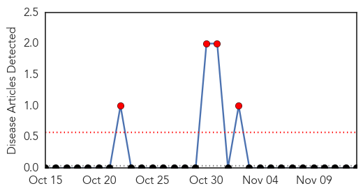

Bubonic Plague
30-Day Web Trend
4 alerts, 0 warnings

30-Day Twitter Trend
0 alerts, 0 warnings

Article Locations

Article Confidences

Top Articles:
-
No articles found for Nov 13, 2014
Top Tweets:
-
No tweets found for Nov 13, 2014
Measles
30-Day Web Trend
1 alerts, 0 warnings

30-Day Twitter Trend
0 alerts, 0 warnings

Article Locations
Article Confidences

Top Articles:
- 0.957
- Measles Outbreak In US At 20-Year High
- 0.933
- WHO warns that progress towards eliminating measles has stalled: 2015 targets will not be met - World
- 0.894
- UN health agency sees 'alarming trend' as efforts lag in eliminating measles
- 0.891
- Efforts Lag in Eliminating Measles
- 0.883
- WHO Warns That Progress Toward Eliminating Measles Has Stalled
- 0.878
- UN health agency sees ‘alarming trend’ as efforts lag in eliminating measles
- 0.749
- Progress on eliminating measles has stalled, WHO warns
- 0.749
- Progress on eliminating measles has stalled, WHO warns
- 0.745
- Progress on eliminating measles has stalled, WHO warns
- 0.711
- Progress on eliminating measles has stalled
Top Tweets:
-
No tweets found for Nov 13, 2014